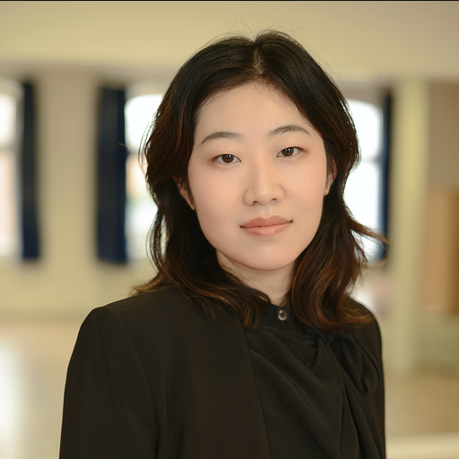

Hua Guo's Resume

My contact information:
My Education
- Master of Arts, Communication Design, Hamburg University of Applied Sciencess
- Bachelor of Arts, Communication Design, Muthesius University of Fine Arts and Design
- Bachelor of Arts, Graphic Design, Beijing Institute of Graphic Communication
My Work Experience
-
Full-Stack web&App Development Bootcamp, WBS Coding School
from 07/2025 until now learning html, css
-
UX/UI & AI Bootcamp, neue fische
02/2025 - 05/2025, Hamburg und Remote
4 app prototype-projects by individual and in team,
using primary and secondary UX research (benchmarking, desktop research, surveys, user interviews) ;
design thinking(personas, user journey, wireframe, prototype);
UI design system,
design withAI tools, usability testing and A11y standard testing based onW3C & WCAG, iterate project inFigma,documentation in FigJam/Notion,
agile management method (Kanban, Scrum) to better and faster teamwork
- Graphic Designer, Asropa Food GmbH
07/2024 - 12/2024, Glinde
Designed food packaging and labeling of Asian products for European market;
Created visuals for CRM systems and website product catalogs;
Developed advertising content for retail and B2B clients
- Business Design UI/UX Specialist, Comdirect Bank
02/2023 - 07/2023, Quickborn
Collaborated in a 6 colleges app team to design
mobile app features maintain the design system
of comdirect app in Figma
participate in user and accessibility research in a
cross-functional team to enhance user inclusivity
regular agile sprint, design review
to iterate with app and IT team
design audit and document with IT Team to maintain high standards
Designed app and product icons aligned with the brand identity
- Web Designer (Working student),Thomsen Group
09/2021 - 02/2022, Hamburg
Spearheaded the redesign of the corporate website
Improved user interface and optimized the
design system
successful before deadline to relaunch the website by agile
-
Graphic Design internship, Thalia Theater
-
Design internship,CDLX
My Skills
Language
Software
- Figma, Adobe
- FigJam/ Miro
- Agile Tools(Trello, Notion)
- HTML